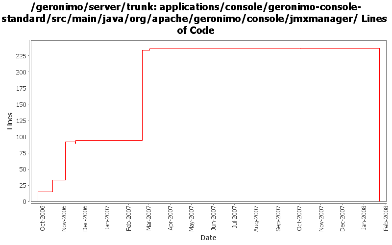

[root]/applications/console/geronimo-console-standard/src/main/java/org/apache/geronimo/console/jmxmanager

| Author | Changes | Lines of Code | Lines per Change |
|---|---|---|---|
| Totals | 18 (100.0%) | 315 (100.0%) | 17.5 |
| ccardona | 3 (16.7%) | 246 (78.1%) | 82.0 |
| akulshreshtha | 2 (11.1%) | 29 (9.2%) | 14.5 |
| pmcmahan | 2 (11.1%) | 15 (4.8%) | 7.5 |
| jlaskowski | 2 (11.1%) | 12 (3.8%) | 6.0 |
| jbohn | 1 (5.6%) | 5 (1.6%) | 5.0 |
| vamsic007 | 2 (11.1%) | 4 (1.3%) | 2.0 |
| kevan | 2 (11.1%) | 2 (0.6%) | 1.0 |
| jdillon | 4 (22.2%) | 2 (0.6%) | 0.5 |
(GERONIMO-3747) Moved applications/* to plugins/*
0 lines of code changed in 2 files:
GERONIMO-2775 late binding of StatisticsHandler and removing from handler collection on stop, changing StatsOnMs to counter, and adding stats startTime and lastSample time to stats. I started with a patch from Viet Nguyen and then made a bunch of changes - thanks Viet
5 lines of code changed in 1 file:
Std props
2 lines of code changed in 2 files:
GERONIMO-2853 Add a way to view MBean stats info in the JMX Viewer portlet (Changes):
- Fixed problem displaying bounded range statistic data
- Added 'Refresh Stats' button
- Added 'Stats' Tab info to the JMX Viewer help page
23 lines of code changed in 1 file:
GERONIMO-2853 Add a way to view MBean stats info in the JMX Viewer portlet
143 lines of code changed in 1 file:
modified svn properties
4 lines of code changed in 2 files:
GERONIMO-2537 Update the src headers in the non-module files. They need to be compliant with the new ASF src header and copyright policy (http://www.apache.org/legal/src-headers.html). I also did some cleanup of the src headers and tried to get them in a consistent format
2 lines of code changed in 2 files:
GERONIMO-2537 All Geronimo source files must be brought in line with the new ASF source header and copyright notice policy
Fix for applications
12 lines of code changed in 2 files:
GERONIMO-2448 Add ServiceModules group in the JMX tree of the JMX portlet
80 lines of code changed in 1 file:
GERONIMO-2471 Applied the JMX Viewer patch with minor modifications
29 lines of code changed in 2 files:
GERONIMO-2333 JMX Portlet
15 lines of code changed in 2 files: